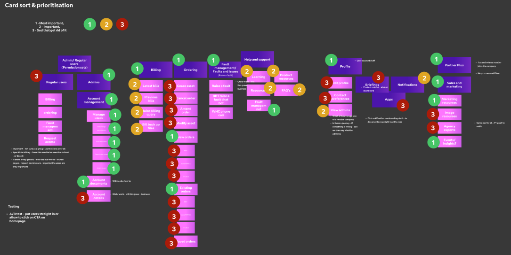

Get Help transformation
Card sort and prioritisation workshop
New user onboarding

Client: BT Wholesale
Project Duration: 3 months
Role: Product Designer
Tools Used: Figma - Prototyping, Mural - Discovery, Planning
Central Hub Team Responsibilities: Homepage, sales & marketing, my profile, administrator settings, and front-facing pages of the site.
Problem Statement
The primary objective was to move away from the outdated Business Zone platform and introduce The Hub.
The new platform needed to be more intuitive and user-friendly, addressing the functional issues and bugs prevalent in the Business Zone.
Additionally, the design had to comply with the modern branding standards of BT.
Approximately 95% of Business Zone users were desktop users.
BT Wholesale aimed to transition from their legacy platform, Business Zone, to a new, more user-friendly platform called "The Hub." This platform would enable internet resellers to manage their customers' products, place new orders, and raise system faults to BT Wholesale. The goal was to align more closely with BT's modern branding while addressing usability issues present in the previous system.
Due to limited access to end-users, the research primarily employed qualitative methods, such as interviews with resellers, to gather insights about The Hub.
Business Zone, BT Wholesale's legacy platform, which was to be phased out for the Hub.
Hub dashboard
Technological Constraints
Project Management
Objective: Mitigate the inconsistencies in the various emails sent out by BT by defining strict design principles for developers to follow. Due to my experience as an email developer I was able to communicate this effectively in a way developers would understand.
Outcome
An increase in email consistency and reduction in developer mistakes/confusions due to the strict design guideliens that were set.
Reduced email phishing anxiety that users were facing due to the poor quality in previous emails.